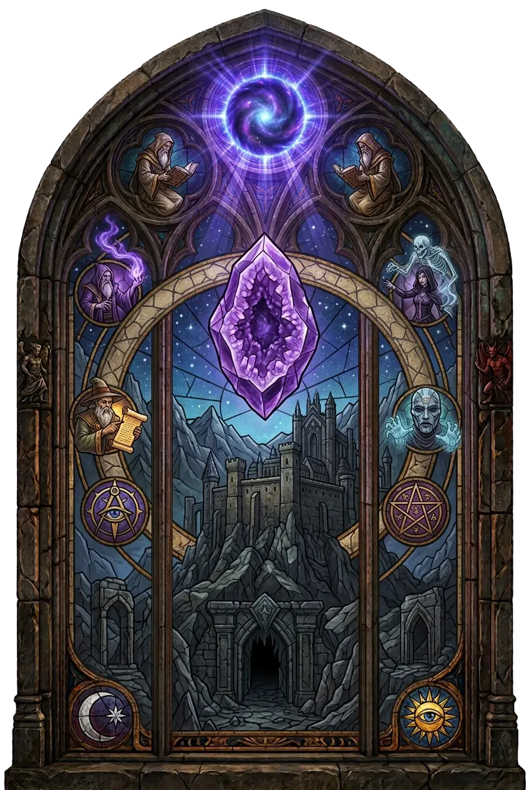

Der Körper bleibt menschlich. Doch der Wille dahinter muss es nicht mehr sein.
Ein Dämon muss keine Armee nach Sanktuario führen, um Einfluss auf die sterbliche Welt zu gewinnen. Ein einzelner menschlicher Körper kann genügen.
Überliefert · nach Diablo Wiki (Fandom)
Besessenheit bezeichnet in Sanktuario den Zustand, in dem ein fremdes Wesen – meist ein Dämon – die Kontrolle über einen menschlichen Körper übernimmt.
Dabei handelt es sich nicht nur um geistige Beeinflussung. Ein Dämon kann den Körper eines Menschen tatsächlich als Hülle benutzen und ihn von innen heraus beherrschen.
Besessenheit steht besonders eng mit dämonischer Magie und Beschwörung in Verbindung. Wird ein Dämon in die sterbliche Welt gerufen, kann er einen menschlichen Körper übernehmen. Dabei wird der Mensch nicht lediglich beeinflusst oder verführt – der Dämon kann sich unmittelbar in seinem Körper festsetzen und ihn kontrollieren.
Die Grenze zwischen Beschwörung und Besessenheit ist deshalb gefährlich dünn. Wer ein dämonisches Wesen herbeiruft, öffnet nicht nur einen Weg in die sterbliche Welt. Unter ungünstigen Umständen bietet er ihm zugleich einen möglichen Wirt.
Menschen sind für Dämonen als Wirte geeignet. Ein besessener Mensch dient dem Dämon als körperliche Hülle, durch die dieser in Sanktuario handeln kann.
Der menschliche Körper wird damit zu einem Gefäß für eine fremde Macht. Die vorhandenen Quellen beschreiben Besessenheit als einen Zustand, der nur äußerst schwer wieder aufgehoben werden kann.
Ist ein Mensch erst vollständig besessen, lässt sich der Dämon kaum gewaltsam entfernen, ohne den Wirt dabei zu töten.
Damit unterscheidet sich Besessenheit deutlich von einfacher geistiger Manipulation. Es handelt sich nicht nur um einen veränderten Willen oder eine Illusion, sondern um eine tatsächliche Verbindung zwischen Dämon und menschlichem Körper.
Bestimmte Formen von Magie erhöhen die Gefahr einer Besessenheit. Dunkle Magie kann sowohl Körper als auch Seele des Anwenders schädigen. Wer solche Kräfte nutzt, wird anfälliger für dämonische Besitzergreifung.
Damit kann Besessenheit auch das Ende eines längeren Prozesses sein. Ein Mensch muss nicht zwangsläufig unmittelbar von einem Dämon überwältigt werden. Wiederholter Umgang mit dunklen Kräften kann ihn zunehmend verwundbar machen.
Noch direkter ist die Gefahr bei der Nutzung dämonischer Magie. Diese Magie arbeitet mit den Kräften der Brennenden Höllen, mit dämonischer Essenz oder unmittelbar mit Dämonen selbst.
Wer solche Mächte beschwört oder zu kontrollieren versucht, setzt sich ihnen zwangsläufig aus. Die Quellen betonen zudem, dass dämonische Magie sowohl einen körperlichen als auch einen geistigen Preis fordert.
Ein wiederkehrendes Problem dämonischer Beschwörung besteht darin, dass der Beschwörer seine Macht überschätzt. Besonders kleinere Dämonen wurden in der Vergangenheit teilweise unterschätzt und als vermeintlich harmlose Diener herbeigerufen.
Doch selbst solche Wesen konnten den Willen ihrer Beschwörer brechen und die Kontrolle übernehmen. Besessenheit ist daher eine besonders drastische Form dieses Kontrollverlusts: Nicht mehr der Mensch beherrscht das beschworene Wesen. Das Wesen beherrscht den Menschen.
Besessenheit steht außerdem eng mit Verderbnis zusammen. Dunkle Magie kann ihre Anwender verändern und sie empfänglicher für dämonischen Einfluss machen.
Besessenheit kann dadurch als eine mögliche Folge zunehmender Verderbnis verstanden werden – zumindest dort, wo dämonische Kräfte beteiligt sind.
Beide Vorgänge sind jedoch nicht dasselbe. Verderbnis kann langsam Körper, Geist oder Seele verändern. Besessenheit bezeichnet dagegen ausdrücklich die Übernahme durch ein fremdes Wesen.
Dämonen können Menschen auch auf andere Weise kontrollieren. Sie können verführen, manipulieren oder ihren Willen beeinflussen, ohne einen Körper vollständig zu übernehmen.
Besessenheit ist deshalb eine besonders konkrete Form dämonischer Einflussnahme. Erst wenn ein Dämon einen Menschen tatsächlich als Hülle benutzt, handelt es sich um Besessenheit im engeren Sinn.
Besessenheit macht die Bedrohung durch Dämonen besonders persönlich. Ein Dämon muss keine Armee nach Sanktuario führen, um Einfluss auf die sterbliche Welt zu gewinnen. Ein einzelner menschlicher Körper kann genügen.
Damit wird Besessenheit zu einer der direktesten Formen, in denen die Brennenden Höllen in das Leben der Menschen eingreifen können. Der Körper bleibt menschlich. Doch der Wille dahinter muss es nicht mehr sein.